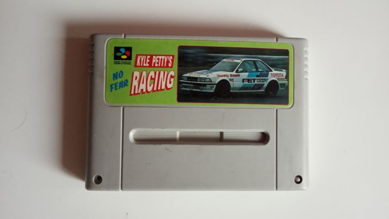
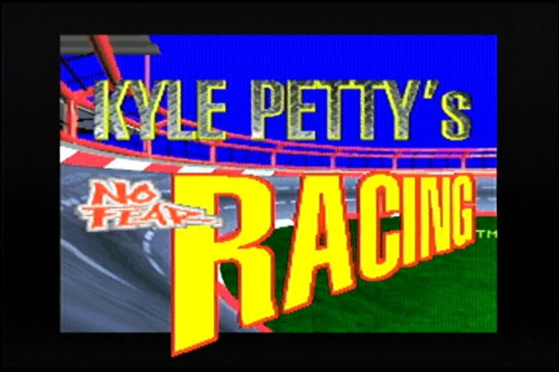
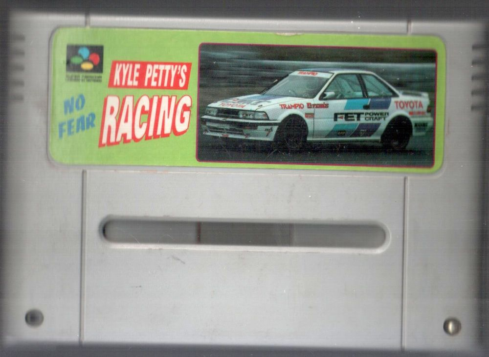
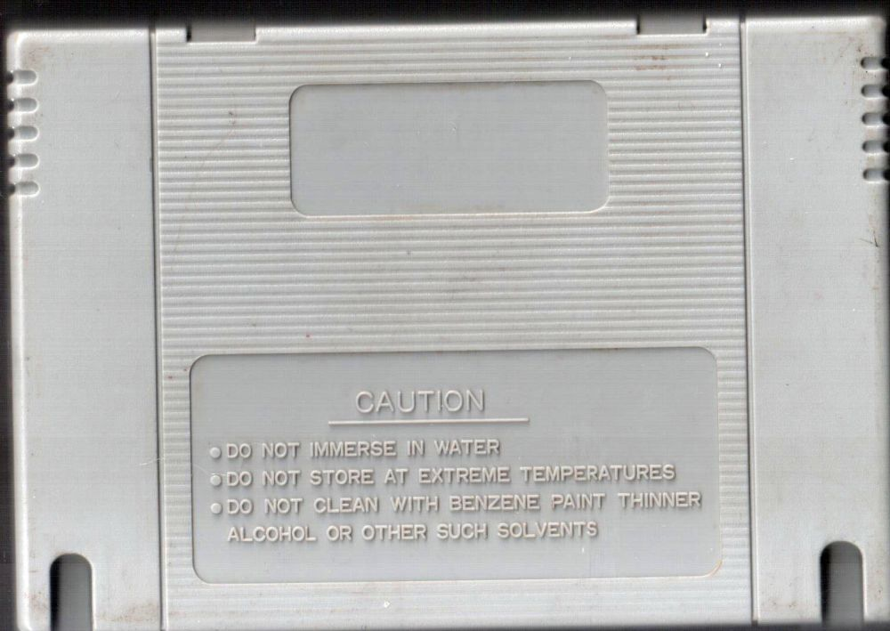
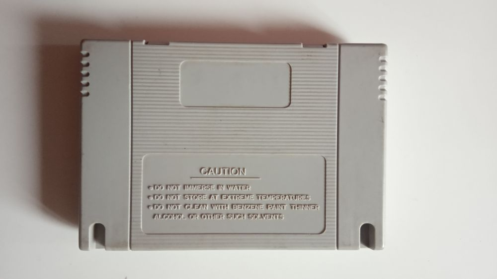
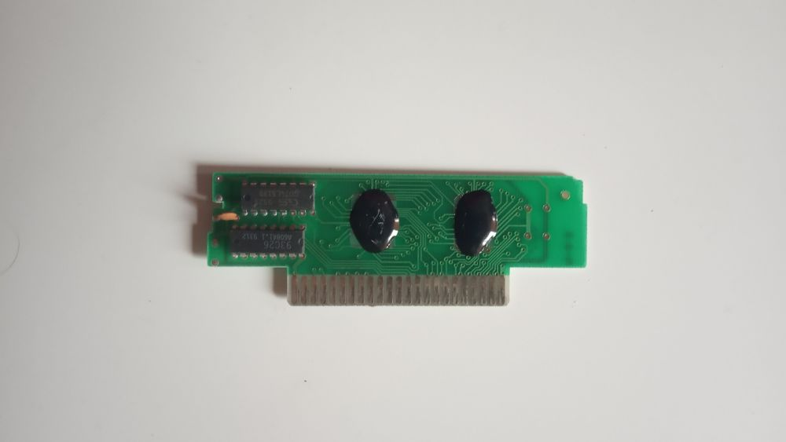

Kyle Petty`s No Fear Racing
Слишком очевидный пиратский картридж:1) Игра под таким названием для Super Famicom не выходила - в Японии её название было Cirsuit USA, а в Европе она вообще не выходила.
2) Обложка вкорне отличается от оригинальной и сделана пиратами самостоятельно с нуля.
3) Оригинальные шрифты при написании названия на обложке.
4) Нет клейма Нинтендо на задней стороне.
5) Предупреждающие надписи снизу другие.
6) Вырезы вместо отверстий.
7) Плата картриджа использует БМК, вместо полноценной микросхемы ПЗУ.
Достаточно типичный пример пиратского картриджа для Супер Нинтендо. Интересным мне показалось то, что картридж закручен только на один винт, я не думаю что так было изначально.
Возможно, что существовал вариант картриджа с коробкой, но к сожалению найти пока не представляется возможным.
Картридж выпущен не раньше чем 19-25 июня 1995 года.
Удивителен и тот факт, что игра кроме Японии и США не выходила в других регионах, так что пираты сделали хорошее дело, привезя игру, которая официально не могла быть и в России в том числе.
Сама по себе игра конечно немного однообразная, но всё же не самая плохая гонка, посмотрите.
Игра внутри: Kyle Petty`s No Fear Racing.
Дополнительные фото и описание к ним:



